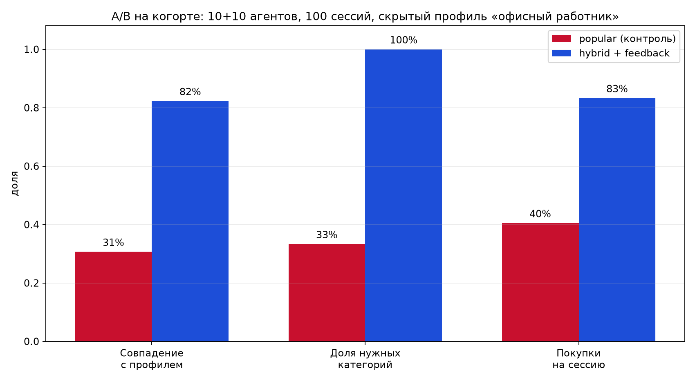
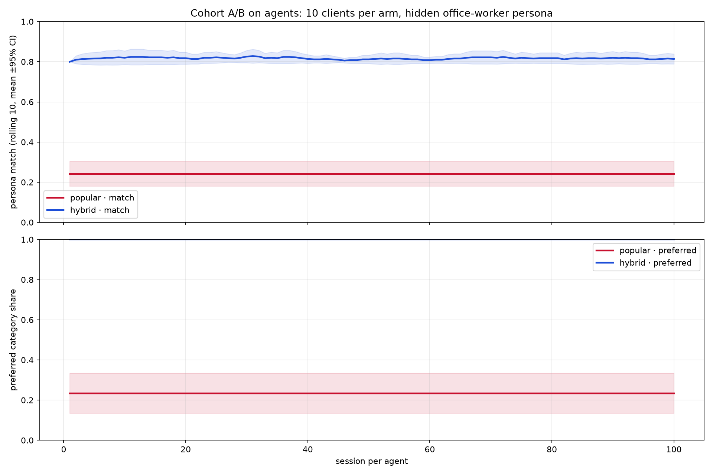

A/B на когорте агентов: скрытый профиль «офисный работник»
Дата: 26.11.2026.
Данные: обезличенный датасет организаторов + синтетические агенты.
Профиль не передаётся в рекомендательную систему — она видит только client_id, покупки и события.
1. Что проверяли
Гипотеза: если у клиента есть типовой профиль, рекомендательная система может подстроиться под него по поведению и выдавать не случайные, а релевантные товары.
Проверка — не на людях, а на агентах:
- 20 синтетических клиентов;
- у всех один скрытый профиль «офисный работник»;
- у каждого своя история и свои события;
- 100 сессий на агента;
- A/B: 10 агентов в контроле, 10 в адаптивной группе.
2. Скрытый профиль
| Параметр |
Значение |
| Роль |
офисный работник / бухгалтер |
| Аудитория |
B2B |
| Интересы |
Office, PDF, обучение, backup, безопасность |
| Избегает |
игры, графику, CAD |
| Стартовая история |
Microsoft Office 2024 для дома и учёбы |
| Что видит система |
только историю, показы, клики и покупки |
Профиль не отправляется в API. Агент использует его только для решения «кликнуть / купить / пропустить».
3. Дизайн A/B
| Плечо |
Что внутри |
Агентов |
Сессий |
| Контроль |
popular, без адаптации |
10 |
100 |
| Тест |
hybrid + feedback + exploration |
10 |
100 |
Метрики:
- match — среднее совпадение топ-3 со скрытым профилем, 0–1;
- preferred share — доля карточек в предпочтённых категориях;
- покупки на сессию — доля сессий, где агент совершил покупку;
- клики — доля сессий с кликом.
4. Результаты
| Метрика |
popular |
hybrid + feedback |
Разница |
| Совпадение с профилем |
24% |
82% |
×3.4 |
| Доля нужных категорий |
23% |
100% |
×4.3 |
| Покупки на сессию |
39% |
83% |
×2.1 |
| Клики |
67% |
90% |
+23 п.п. |


5. Что это значит
- Для офисного работника популярность ошибается: в топ попадают devtools/backup/analytics, а не Office/PDF/обучение.
- Адаптивная система после кликов и покупок выходит на 100% предпочтённых категорий.
- Покупки растут в 2.1 раза в симуляции.
- Это не «магия LLM»: работают граф связей, правила, feedback и exploration.
6. Офлайн-бэктест на датасете
| Группа |
Baseline Precision@3 |
Наша модель |
| B2B A |
3.6% |
9.4% |
| B2B B, холодный старт |
5.1% |
12.3% |
| B2C A |
19.4% |
19.4% |
| B2C B |
19.2% |
19.2% |
Вывод: на B2B модель примерно в 2.4–2.6 раза лучше baseline; на B2C не теряем. B2C-выборка маленькая, выводы по ней осторожные.
7. Ограничения
- Это агенты, не реальные пользователи.
- Профиль и вероятности покупки заданы нами; это проверка механизма, а не доказательство рынка.
- Каталог в демо синтетический; на реальном каталоге цифры изменятся.
- Для продажи заказчику нужен пилот на реальном трафике с контрольной группой.
8. Следующий шаг
- Прогнать 3 профиля: офисный работник, Go-разработчик, дизайнер/студент.
- Показать, где адаптация даёт uplift, а где популярность уже достаточна.
- Запустить пилот на реальном трафике:
- контроль — текущая выдача;
- тест — hybrid + feedback;
- метрики: conversion, attachment rate, выручка на 1000 показов, Fill Rate.
- После 4–6 недель — бизнес-кейс для заказчика.
9. Воспроизведение
cd /home/basili4/GolandProjects/lk-advisor
python3 analysis/office_cohort_ab.py
python3 analysis/make_cohort_summary.py
Скрипт сам сбрасывает тестовых клиентов и пересоздаёт demo-seed после прогона.
10. Для презы — три сообщения
- Профиль скрыт, система учится по поведению. Это честный тест, а не подгонка.
- На когорте 10+10 адаптация даёт 82% match и 100% нужных категорий против 24% и 23% у популярности.
- Покупки в симуляции растут в 2.1 раза. Это основа для пилота и бизнес-кейса.